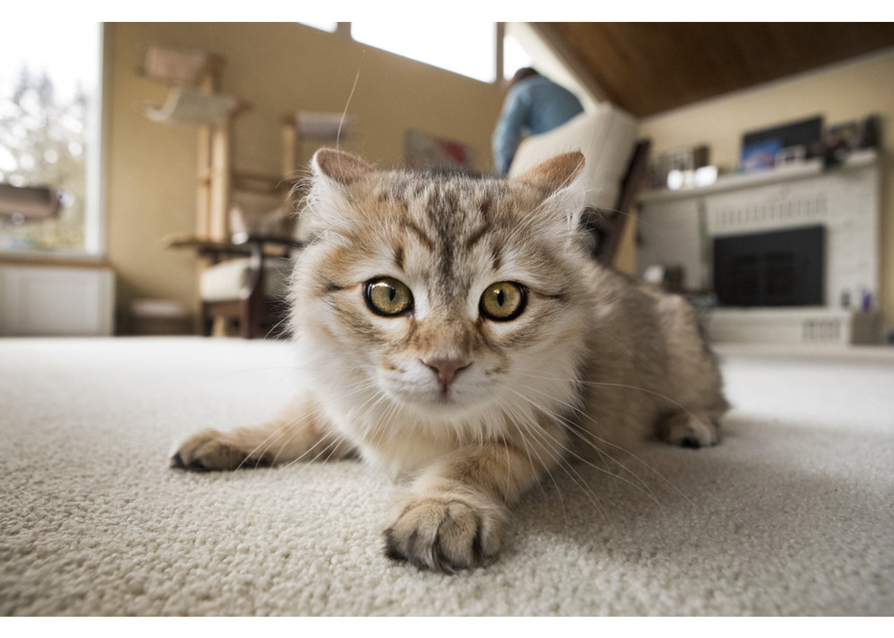
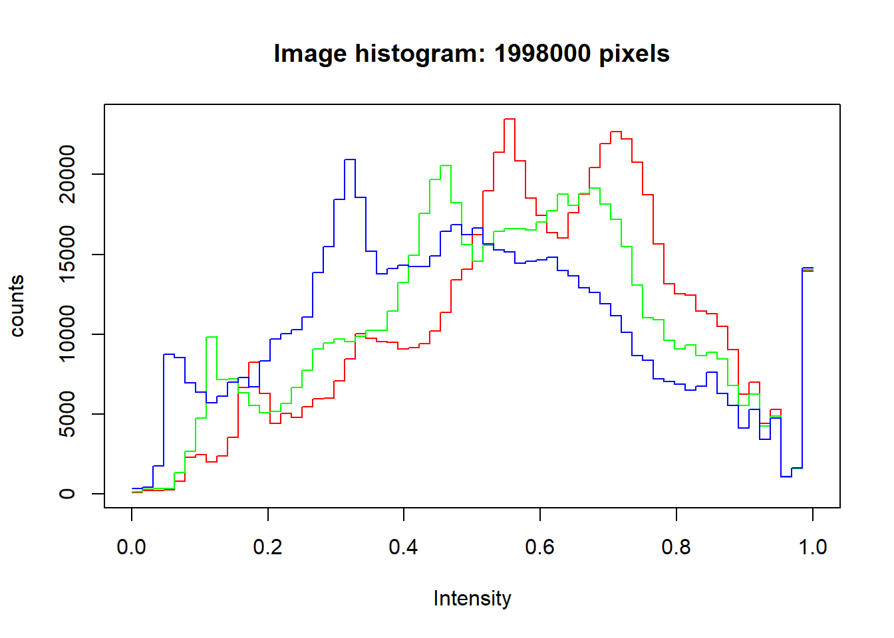

Hello again. Unfortunately it took longer than I had anticipated to create another post. I’ve spent a lot of time lately trying to set up Ubuntu on my desktop PC to use features like GPU-accelerated tensorflow etc.
I chose image recognition as my first project utilizing machine learning. I chose image recognition, because I think it shows the general concept of machine learning quite well. As for the pictures I used, I chose pictures of three different kinds of mammals: cats, orangutans and sloths. There’s not really a reason behind that choice, other than me liking those animals a lot. So let’s go through the project from the beginning.
knitr::opts_knit$set(root.dir = 'ML1_Images')Before starting we have to load the packages necessary. We are using keras for the machine learning components and EBImage to read the images.
#loading packages
if(!require(keras)){
install.packages("keras")
library(keras)
}
if(!require(EBImage)){
install.packages("EBImage")
library(EBImage)
}Now we can start to load our images into R. We’re going to store our images in a list, that we’ll fill with the help of a for loop.
pictures <- c("c1.jpg", "c2.jpg", "c3.jpg", "c4.jpg", "c5.jpg", "c6.jpg", "c7.jpg", "c8.jpg", "c9.jpg", "c10.jpg",
"o1.jpg", "o2.jpg", "o3.jpg", "o4.jpg", "o5.jpg", "o6.jpg", "o7.jpg", "o8.jpg", "o9.jpg", "o10.jpg",
"s1.jpg", "s2.jpg", "s3.jpg", "s4.jpg", "s5.jpg", "s6.jpg", "s7.jpg", "s8.jpg", "s9.jpg", "s10.jpg")
mypictures <- list()
for (i in 1:30){
mypictures[[i]] <- readImage(pictures[i])
}We have 30 images in total: 10 cat pictures, 10 orangutan pictures and 10 sloth pictures.
Let’s get an overview of the data. For example, we’re going to use the first picture that looks like this.

As you can see the first image contains a cat.
## Image
## colorMode : Color
## storage.mode : double
## dim : 1000 666 3
## frames.total : 3
## frames.render: 1
##
## imageData(object)[1:5,1:6,1]
## [,1] [,2] [,3] [,4] [,5] [,6]
## [1,] 1 1 1 1 1 1
## [2,] 1 1 1 1 1 1
## [3,] 1 1 1 1 1 1
## [4,] 1 1 1 1 1 1
## [5,] 1 1 1 1 1 1## Min. 1st Qu. Median Mean 3rd Qu. Max.
## 0.0000 0.3804 0.5529 0.5434 0.7098 1.0000R transformed the image into a data-matrix containing the pixels. The images can also be plotted using a histogram.

The histogram has three colors for a reason. The images are made up of three different kinds of pixels. Red pixels, green pixels and blue pixels (RGB). At the moment all of our images have different sizes as you can see in the following output.
## Formal class 'Image' [package "EBImage"] with 2 slots
## ..@ .Data : num [1:1000, 1:666, 1:3] 1 1 1 1 1 1 1 1 1 1 ...
## ..@ colormode: int 2## Formal class 'Image' [package "EBImage"] with 2 slots
## ..@ .Data : num [1:600, 1:335, 1:3] 0.69 0.69 0.698 0.702 0.71 ...
## ..@ colormode: int 2## Formal class 'Image' [package "EBImage"] with 2 slots
## ..@ .Data : num [1:3000, 1:2000, 1:3] 0.173 0.2 0.157 0.137 0.157 ...
## ..@ colormode: int 2But we want the images to have the same size. We will resize them to smalles images. And while we’re at it, we’re going to convert the reshape the pictures as well.
#resizing images
for (i in 1:30){
mypictures[[i]] <- resize(mypictures[[i]], 48, 48)
}
#reshaping images
for (i in 1:30){
mypictures[[i]] <- array_reshape(mypictures[[i]], c(48, 48, 3))
}
str(mypictures)## List of 30
## $ : num [1:48, 1:48, 1:3] 1 1 1 1 1 ...
## $ : num [1:48, 1:48, 1:3] 0.647 0.639 0.646 0.703 0.75 ...
## $ : num [1:48, 1:48, 1:3] 1 1 1 1 1 1 1 1 1 1 ...
## $ : num [1:48, 1:48, 1:3] 0.855 0.855 0.851 0.859 0.863 ...
## $ : num [1:48, 1:48, 1:3] 0.251 0.246 0.261 0.242 0.254 ...
## $ : num [1:48, 1:48, 1:3] 0.437 0.584 0.579 0.593 0.266 ...
## $ : num [1:48, 1:48, 1:3] 0.098 0.0946 0.0667 0.0511 0.055 ...
## $ : num [1:48, 1:48, 1:3] 0.108 0.115 0.11 0.116 0.123 ...
## $ : num [1:48, 1:48, 1:3] 0.537 0.545 0.553 0.561 0.569 ...
## $ : num [1:48, 1:48, 1:3] 0.1061 0.0784 0.0785 0.1127 0.1219 ...
## $ : num [1:48, 1:48, 1:3] 0.72 0.755 0.769 0.757 0.743 ...
## $ : num [1:48, 1:48, 1:3] 0.225 0.0688 0.1193 0.0705 0.3223 ...
## $ : num [1:48, 1:48, 1:3] 0.388 0.315 0.301 0.295 0.339 ...
## $ : num [1:48, 1:48, 1:3] 0.1935 0.1157 0.0974 0.0902 0.0686 ...
## $ : num [1:48, 1:48, 1:3] 0.378 0.12 0.15 0.309 0.498 ...
## $ : num [1:48, 1:48, 1:3] 0.3846 0.2123 0.0881 0.6182 0.2205 ...
## $ : num [1:48, 1:48, 1:3] 0.396 0.417 0.442 0.433 0.433 ...
## $ : num [1:48, 1:48, 1:3] 0.192 0.235 0.658 0.282 0.167 ...
## $ : num [1:48, 1:48, 1:3] 0.188 0.202 0.223 0.536 0.223 ...
## $ : num [1:48, 1:48, 1:3] 0.456 0.471 0.566 0.586 0.473 ...
## $ : num [1:48, 1:48, 1:3] 0.694 0.293 0.168 0.523 0.626 ...
## $ : num [1:48, 1:48, 1:3] 0.365 0.34 0.288 0.358 0.335 ...
## $ : num [1:48, 1:48, 1:3] 0.873 0.573 0.802 0.875 0.875 ...
## $ : num [1:48, 1:48, 1:3] 0.185 0.147 0.127 0.179 0.151 ...
## $ : num [1:48, 1:48, 1:3] 0.478 0.487 0.406 0.291 0.265 ...
## $ : num [1:48, 1:48, 1:3] 0.231 0.275 0.216 0.232 0.275 ...
## $ : num [1:48, 1:48, 1:3] 0.481 0.629 0.569 0.63 0.8 ...
## $ : num [1:48, 1:48, 1:3] 0.937 0.823 0.74 0.944 0.841 ...
## $ : num [1:48, 1:48, 1:3] 0.319 0.35 0.453 0.833 0.386 ...
## $ : num [1:48, 1:48, 1:3] 0.253 0.33 0.363 0.404 0.451 ...